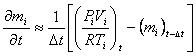

从 j 区到 i 区的空气流量， Fj,i [kg/s]，是沿流路的压降的函数， Pj - Pi:
|
|
(1) |
空气质量， mi [kg]，在 i 区由理想气体定律给出

|
(2) |
哪里
Vi
= 房间体积 [m
3],
Pi
= 房间压力 [Pa],
Ti
= 房间温度 [K]，以及
R
= 287.055 [焦耳/公斤×
K]（空气的气体常数）。
对于瞬态解，质量守恒定律指出：

|
(3) |
|
 |
(4) |
哪里
mi = i 区的空气质量，
Fj,i = j 区和 i 区之间的气流速率 [kg/s]： 正值表示从 j 到 i 的流量，负值表示从 i 到 j 的流量，并且
Fi> = 可能会在该区域添加或去除大量空气的非流动过程。
CONTAM 1.0 没有规定此类非流动过程，并且通过假设准稳态条件来评估流动，得出以下方程

|
(5) |
CONTAM 现在可以通过在执行瞬态模拟时允许密度在时间步长内变化来提供此类非流动过程。
您可以使用以下命令激活此选项 在时间步长内改变密度 设置下的 气流数值模拟参数 。如果设置了该参数，则进行气流计算时执行式3；否则使用方程 5。